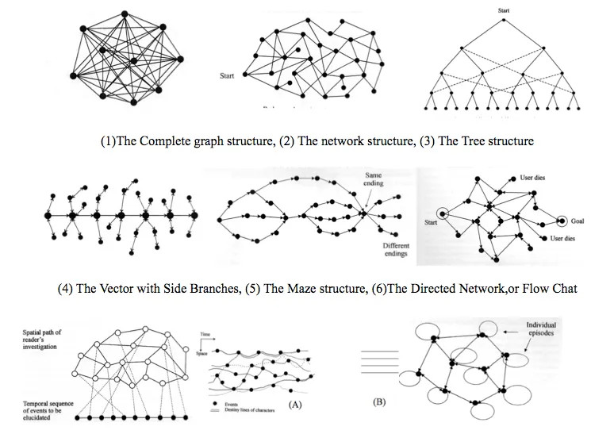

Image 1 of 1: ‘narratives’
Narrative as Virtual Reality 2: Revisiting Immersion
and Interactivity in Literature by Ryan, Marie-Laure. Via
annemarleen.gitbook.io https://annemarleen.gitbook.io/immersive-design/class-0-2/class-1 Image 1 of 1: ‘graph’
Linear Stories (Non-Interactive) Graph Image 1 of 1: ‘ebooks’
eBooks can now be read on a large variety of devices
© Per Palmkvist Knudsen from Wikimedia Image 1 of 1: ‘time machine’
Poster for the 1960 film The Time Machine by Reynold
Brown from Wikimedia Image 1 of 1: ‘audio’
Audio files Image 1 of 1: ‘graph’
Non-Linear Stories (Non-Interactive) Graph Image 1 of 1: ‘[decorative]’
by Diseñadores publicitarios from Wikimedia Image 1 of 1: ‘graph’
Linear Stories (Interactive) Graph Image 1 of 1: ‘[decorative]’
© robu_s from AdobeStock Image 1 of 1: ‘graph’
Non-Linear Stories (Interactive) Graph Image 1 of 1: ‘headset’
© Have a nice day from AdobeStock Image 1 of 1: ‘black mirror’
© Black Mirror Logo by Mark Simonson and Céréales
Killer Image 1 of 1: ‘graph’
Multiple ending stories graph Image 1 of 1: ‘final fantasy’
by Hautala and David Levy from Wikimedia Image 1 of 1: ‘graph’
Branch stories graph Image 1 of 1: ‘[decorative]’
© greyloch from Wikimedia Image 1 of 1: ‘graph’
Open ended stories graph Image 1 of 1: ‘creed’
Screenshot of Assassin’s Creed © Gary Ullah from
Wikimedia Image 1 of 1: ‘graph’
Player driven stories graph (Open world) graph Image 1 of 1: ‘[decorative]’
Freeman Tilden. English: Wilber “Bud” E. Dutton from
Wikimedia Image 1 of 1: ‘[decorative]’
Tilden principles into storytelling Image 1 of 1: ‘[decorative]’
Seven tips for digital storytelling with cultural
heritage © Maggy Szynkielewska, 2020 from https://pro.europeana.eu/page/seven-tips-for-digital-storytelling

.jpg){kind=link}


{kind=link}


.jpg)

.jpg)